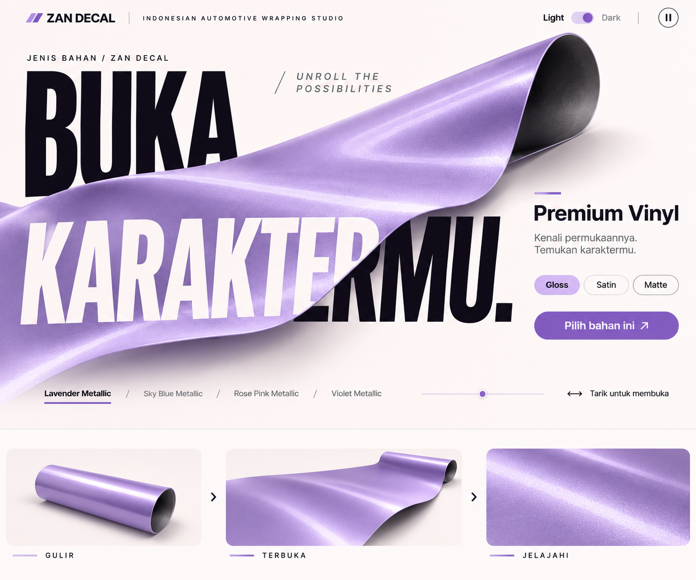
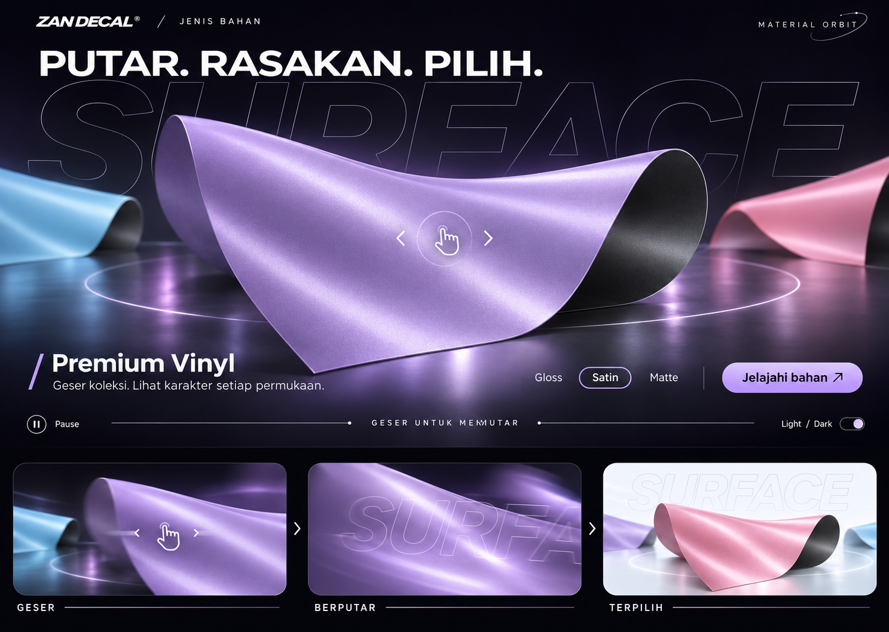
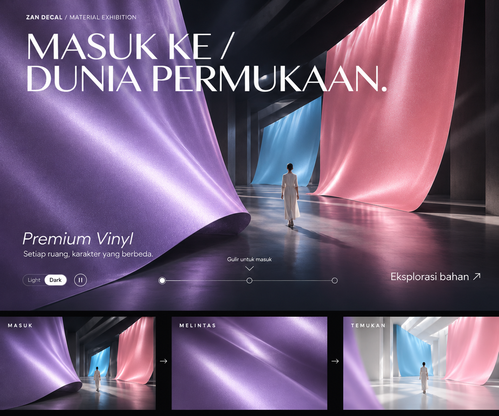
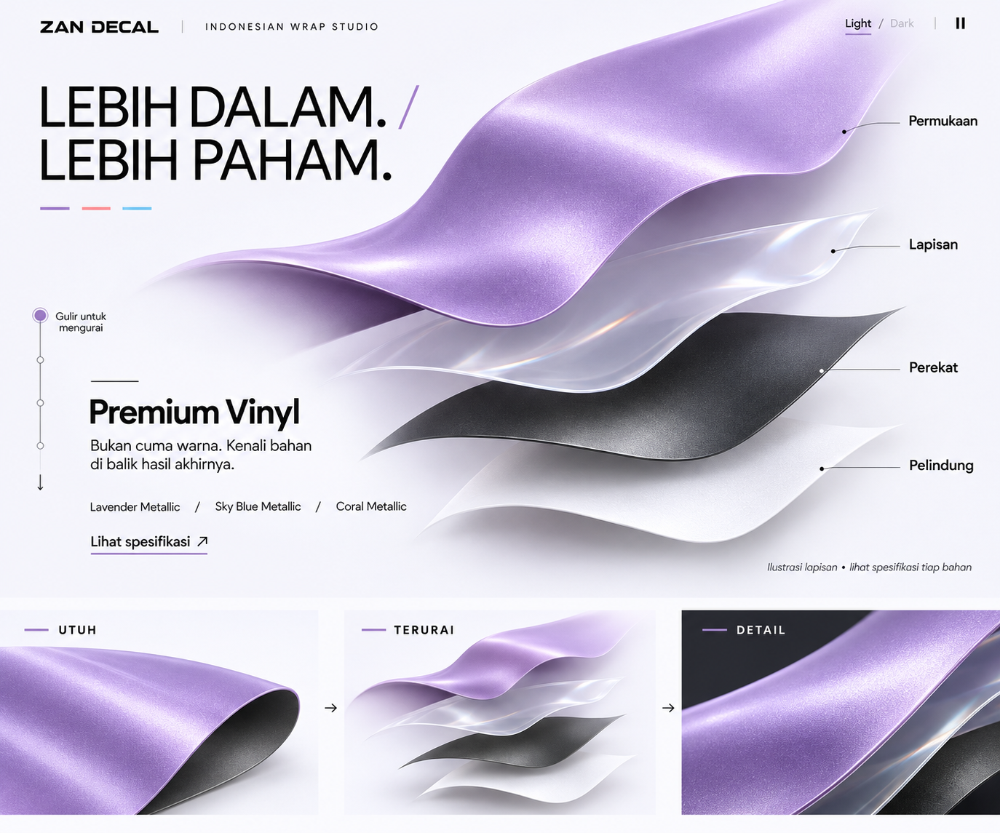
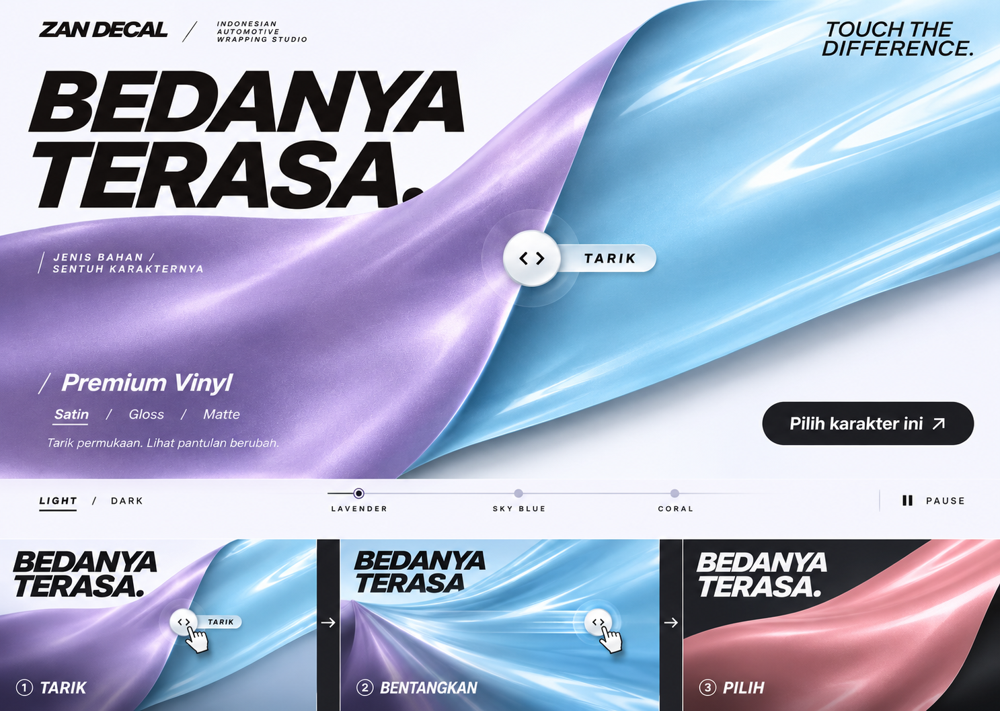

Mockup 1
Ukuran penuh ↗
Mockup 2
Ukuran penuh ↗
Mockup 3
Ukuran penuh ↗
Mockup 4
Ukuran penuh ↗
Mockup 5
Ukuran penuh ↗
Lima mockup baru dalam satu halaman. Bagian bawah setiap gambar menunjukkan urutan konsep geraknya. Ini pratinjau gambar dan storyboard, belum animasi live.




